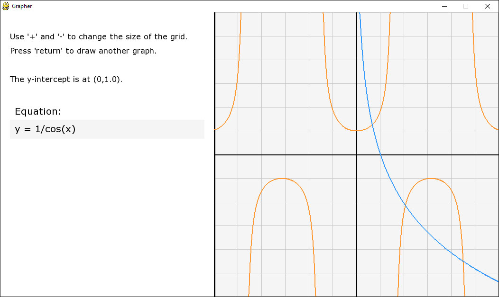

{kind=link}
Fun Facts
Here's some fun facts about me. At least, I think they're fun. I guess you'll just have to read them to find out!
Techie Firsts
First Coding Experience
The first developer environment I used was Microsoft Visual C++ 2010 Express because first language I tried to learn was C++ using this tutorial series. I'm not criticising the tutorial series, but I think I was about 12 years old at the time so I'll leave you to guess how that went! I've embedded the first programming tutorial I ever watched if you're interested:
I chose C++ at first because at the time I knew of nothing that I could compare it to in terms of its syntax and general suitability for beginners. That is why I soon switched to Python as my go to language. To this day I think it is a great language.
First Computer
The first computer I owned was a Dell Inspiron B130 (which was old at the time) and I thought it was broken at first because the battery was flat and barely held its charge! When I obtained the device, it only had a mere 256MB of RAM - so it quickly became the victim of my first RAM upgrade! I maxed it out with a mighty 2GB of Crucial memory. The difference was really night and day.
{kind=link}
That was when I first started to fall in love with computer science - I would spend hours editing my photos on Gimp (a free alternative to Photoshop). I would create accounts on any and almost all websites I came across so that I could experience the true power of the Web 2.0 (a.k.a. "the interactive web") and I've been loving it ever since. Yes, I'm a geek. I know.
First Real Project
The first piece of software that I wrote that actually had any real substance in my opinion was the graphing utility. I mainly just used Python and pygame. Later on I reused and enhanced the software substantially as part of my A level computing coursework.
{kind=link}
I decided to rewrite it from the ground up due to the quantity of documentation that was required as well as there being many things I wanted to do differently.
I just love to build cool stuff. It's that simple.
Travelling
Silicon Valley
It has always been a dream of mine to go to America. When I was young I thought that everything was just bigger and better. I've since realised that the United States (especially the San Francisco bay area) can provide a wealth of opportunity that is simply not available to the same extent from anywhere else in the world.
I flew out to San Francisco on 30th June 2016 and I love being able to meet so many inspirational people in the industry. The other huge advantage about being here is that I get to surround myself with other people who code. This only motivates me to work harder and collaborate more effectively.
Danish Jamboree

I was a part of the scouts from a young age, but never was it more exciting for me than when my scout troop got the incredible opportunity to go travelling to Denmark from England to meet over 30,000 scouts from around the world for a week in a vast international event. Not only that, we got to spend another week or so in a Danish homestay experiencing a new culture and meeting some really brilliant people. By the way, here's the song for that event (it was certainly fun trying to sing the Danish lyrics)!
Expedition
Having had an early morning paper round for over five years - largely to save up to be able to go on expedition, I was able to
fund my place on an expedition to Laos and Thailand in the summer of 2014, which was undoubtedly one of the most significant periods of
my life. The whole trip and the opportunity to teach English to Laos' children taught me so much about our materialistic
values and lack of appreciation of our comparative privilege. We stayed in an old classroom in the village,
when I had some free time I covered the chalk boards with some good old proof by induction and taught some times tables too!
{kind=link}
Projects
Here are some of the best things that I have
created so far in my opinion (in no particular order).
I can't wait for you to see what I'm working on right now!
{kind=link}
MVP Landing Page
This was a really neat project in itself because using the Django web framework for Python I was able to create a module seperate from the rest of the program that could do one specific thing very well.
In this case, it was an "Email List" module. That form in the upper right of the website would take users names and emails. It then validates and appropriately formats the data ready for entry in to the database. Using Django models means that a new database table will automatically be created by Django in whichever Django compatible database technology that you want to use.
Django generates all the SQL for you so all you have to do is install the app in your Django project and you're pretty much good to go with your own personal email sign up form which can automatically collect the users full name and email and save it to your database for marketing or public anouncements.
Guido Van Rossum Tribute Page
Guido Van Rossum, for those of you that don't already know, invented the Python programming language. It also happens to be the first programming language I learned as well as the best overall language for beginners to learn in my opinon. Not everyone deserves their own tribute page, but this man certatinly does!
Now granted, this was one of the very first projects I ever made and as a result you can see that it's extremely simple. That said, it does demonstrate that even back when I made that project I could effectively use bootstrap to make a simple web page very fast (it took only about 30 minutes or so). I do also like to leave this up for people to see as a demonstration that everyone has to start somewhere!
Click on Van Rossum's face or the following link to be taken to the codepen.
Flip Crash
I really enjoyed making this app because it was one of my first real ventures in to the world of mobile game development. I have encourporated Game Center leaderboards so it uses your Apple ID to connect with your Game Center friends and that then allows you to compare high scores and see where you stand in the world rankings.
It was a priority for me right from the start of this project to make sure that it was optimised and worked well for both iPhone and iPad. Personally, even though iOS does now do a good job with upscaling unoptimised apps I'd certainly rather this app not be one of them.
I hope you enjoy playing this game, and if you don't then at least you'll probably have beaten my highscore!
Personal Graphing Utility
This was a Python project that I built for fun to be able to graph common mathematical equations in a nice intuitive way and with a simple but functional user interface and user experience.
I personally think that anyone should be able to have their very own graphing utility which they can customise however they'd like.
This was a really neat project and I showcase this one in particular because I remember it specifically for it being the one where I finally began to understand what it meant to write great, object-oriented code in a practical environment to accomplish a specific task.
I believe I am one of many developers who believe that everything within reason should be open source. So in the support of the brilliant open source programming community, you can see this project on GitHub.
Favourites Right Now
These are in order so my favourite favourites are at the top.
Favourite YouTubers
Christian Guzman
Linus Tech Tips
LearnCode.academy
Numberphile
Sentdex
They all post fantastic, reliable content.
Favourite Platforms
Trello
Coursera
Airbnb
Plex
Stack Exchange
All these platforms have iOS apps that are free to download!
FAQ
It's good to ask questions. If you happen to have one, I promise that I will respond as soon as possible.
I think that the Python course on Codecademy is a fantastic place to start because you don't have to download anything and it really seems to guide you through the process, even offering hints for when you get stuck.
If for some reason you'd prefer not to learn Python, my second language of choice for beginners would be JavaScript. This is now commonly referred to as "the universal language of the web" becuase of its mass adoption by many major tech companies and professionals, as well as the fact that all modern browsers can understand and run it. Web development is the place to be these days, but you can of course do web development in Python as well.
If you feel a little more confident, or want to try writing some code outside of the browser, I think that YouTube is the best resource by far. Specifically, my favourite series is called Python 3 Basics Tutorial Series which is by a guy called Harrison Kinsley. He also does some much more advanced tutorials which I also love. I should probably add that I'm not affiliated with him or his site in any way. Some other good tutorials for Python are here, here and here.
With all that said, just because I learnt Python first does not mean that you have to as well. Technologies are changing all the time and tomorrow there may well be something even better for beginners than what I have suggested. Honestly though, I wouldn't spend too much time choosing a language because if you just pick one and manage to learn how to program (which won't happen overnight, so just keep working at it if you haven't got there yet) using that language then 90% of the skills you've learnt will be transferrable to any other popular language. So the bottom line - choose a language and stick with it until you can code.
Just a final sidenote; if you find projects to work on that you are really passionate about, you will learn much faster and much more easily than if you were to think about programming like you do your other tedious work that you've been putting off for ages.
Attention Learners
If you want to talk tech or collaborate on your new GitHub project, don't hesitate to send me a message!
I love to hear about all of the fantastic projects you people are working on and I certainly learn a lot too.
If you haven't heard of Git or GitHub before - that's fine. If you're willing to learn, I would be more than willing to help you out.
Erm... no. I did do a Russian GCSE in secondary school though and I thought that it would have been a complete waste of time if I didn't carry it on so long story short I do like to read, write and learn Russian when I can but I am still a terrible Russian speaker and I can't understand actual Russian people because they speak so fast! Seriously, I swear they speak faster in general than native English speakers do.
That said, I love the language and I would recommend it to anyone who would like to expand and diversify their skill set. I made a Russian blog where I attempt to write in Russian occasionally. Sorry in advance if I haven't updated that in a while because I am ridiculously slow at typing in Russian on an English keyboard and I find that rather frustrating, so that's mainly why. If you want to learn with me, check out these resources.